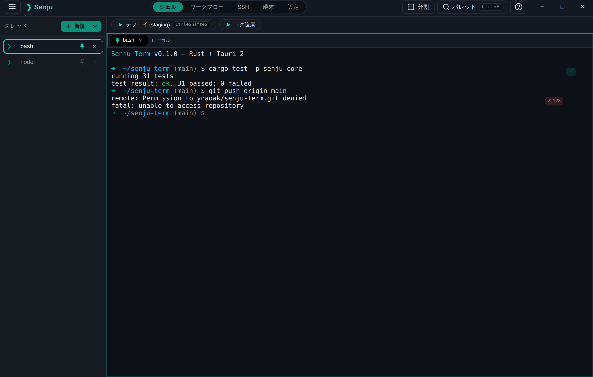
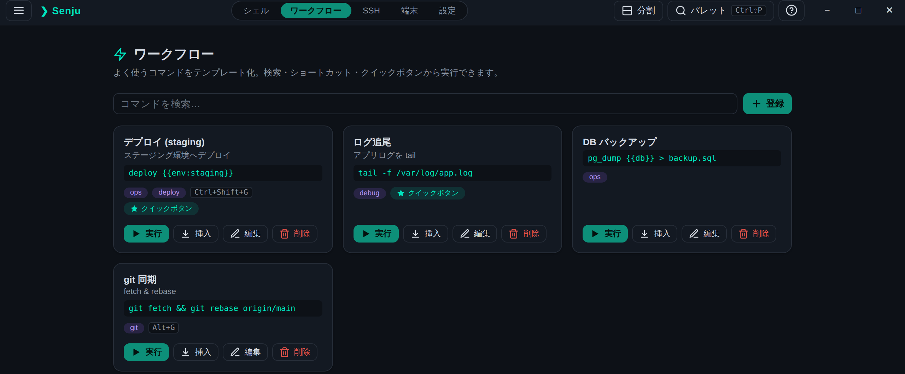
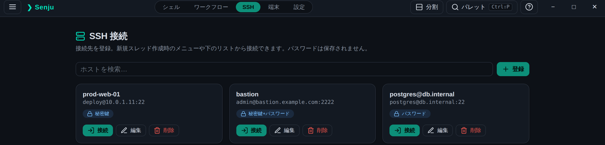

スレッド管理
ローカルシェルと SSH セッションを「スレッド」として一覧管理。 非表示スレッドもバックグラウンドで動作し、出力があれば点灯で通知。 ピン留め・インラインリネーム・上下ペイン分割に対応。
Rust + Tauri 2 · Windows / macOS / Linux
Warp にインスパイアされた、カスタムコマンド(ワークフロー)管理と SSH 接続管理を組み込んだクロスプラットフォームターミナル。 描画は xterm.js、ローカルシェルは ConPTY / openpty、SSH は Pure Rust の russh。ビルドステップのないフロントエンド。

ローカルシェルと SSH セッションを「スレッド」として一覧管理。 非表示スレッドもバックグラウンドで動作し、出力があれば点灯で通知。 ピン留め・インラインリネーム・上下ペイン分割に対応。
起動するシェルをプロファイルとして登録。「＋ 新規」の ▾ メニューからプロファイルや登録済み SSH 接続先を選択。 OS に応じた既定プロファイルを初回に自動生成。
Ctrl+Shift+P でワークフロー・SSH ホスト・アクションを 横断ファジー検索。Enter で実行、 Shift+Enter で挿入のみ。
OS 標準の枠を外したカスタムタイトルバー。ウィンドウ操作ボタンは OS に合わせて配置(Windows/Linux は右上、macOS は左上)。 ウィンドウサイズ・位置を記憶して復元。
256 色 / True Color 描画、スクロールバックを含む端末内検索 (Ctrl+Shift+F)、フォント・スクロールバック行数の設定。
バックエンドは Rust。SSH は OpenSSL / libssh2 に依存しない russh、ローカルは portable-pty。GUI 非依存のコア crate に ロジックを分離。
Warp の Workflows 相当。コマンドテンプレートを名前・説明・タグ付きで 登録し、実行時にプレースホルダを埋めて呼び出します。
{{名前}} / {{名前:既定値}} のプレースホルダ対応

ホストを登録して、新規スレッド作成時に選択。パスワードや パスフレーズは保存せず、接続時のみ使用します。
publickey,password)に対応各プラットフォーム向けのインストーラは GitHub Releases から入手できます。
Windows · macOS (Universal) · Linux (deb / rpm / AppImage)